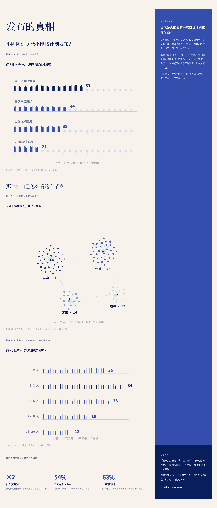
调研报告 / 研究一页 · 青瓷侧栏
Survey One-Pager · Porcelain Rail
主栏放结论，侧栏走方法与样本轨道。
每个模板是一整页可发布的报告骨架，不是单张图。复制对应语言的 HTML，替换数据、标题和来源即可。页内图表仍须从 catalog.md 选择真实图型；缩略图仅展示版式和信息密度。
先按报告类型、内容结构和阅读任务筛，再看版心和密度。调研 / 研究看 R01、R07、R08、R11；业务数据 / 财务经营看 R04、R09、R12；年度 / 长周期复盘看 R02、R03、R06；产品、项目和个人数据记录看 R05、R10。模板名称只是版式线索，不是行业限制。
| 760 | 窄栏叙事 |
| 880 | 中张单位图 |
| 980 | 常规报告 |
| 1080 | 宽版海报 / 仪表盘 |
| 600×1000 | 定尺社媒卡 |

主栏放结论，侧栏走方法与样本轨道。
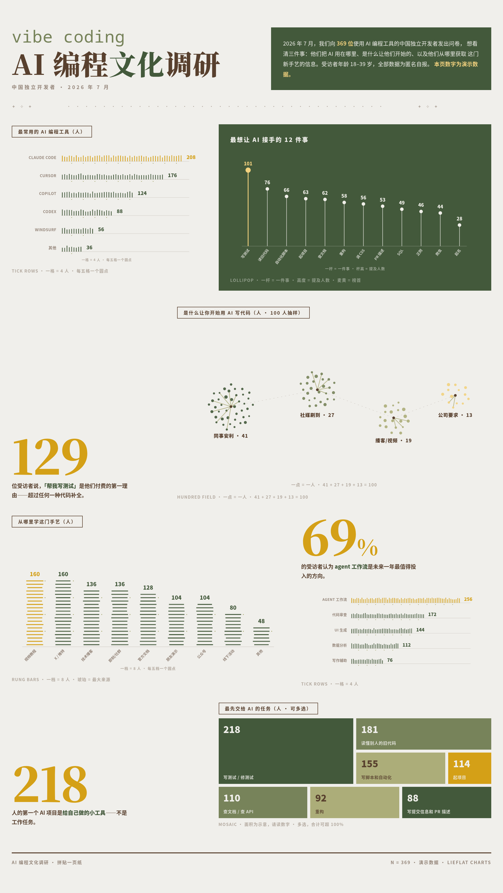
巨号数字和多张图穿插成杂志拼贴。
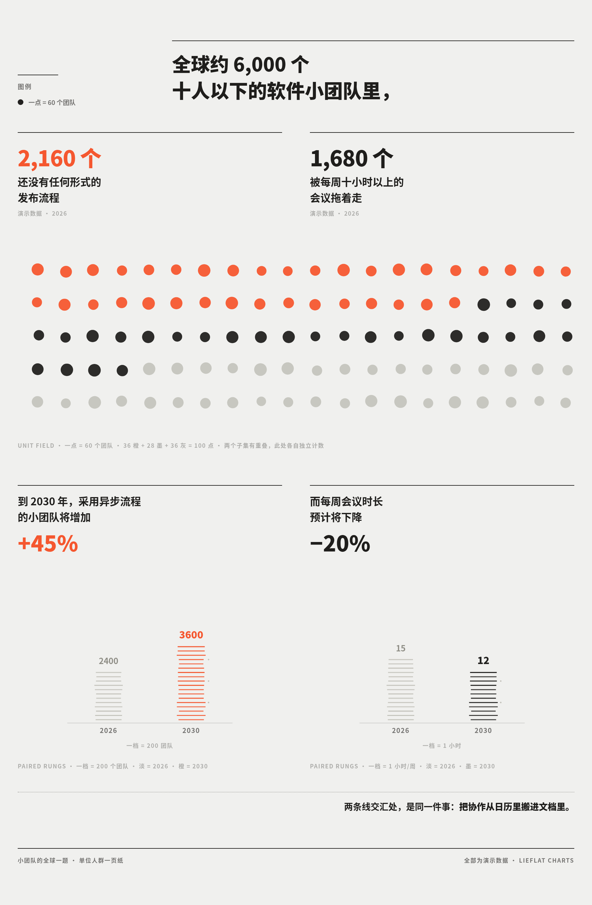
一句大字配一片可数的单位点阵。
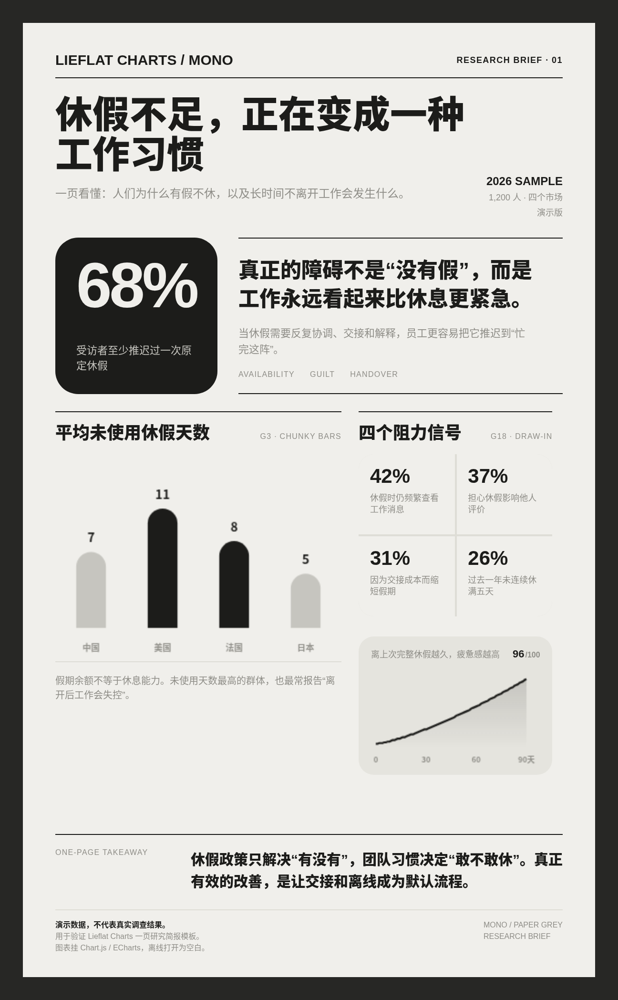
600×1000 定尺，不滚动，适合单张分享。
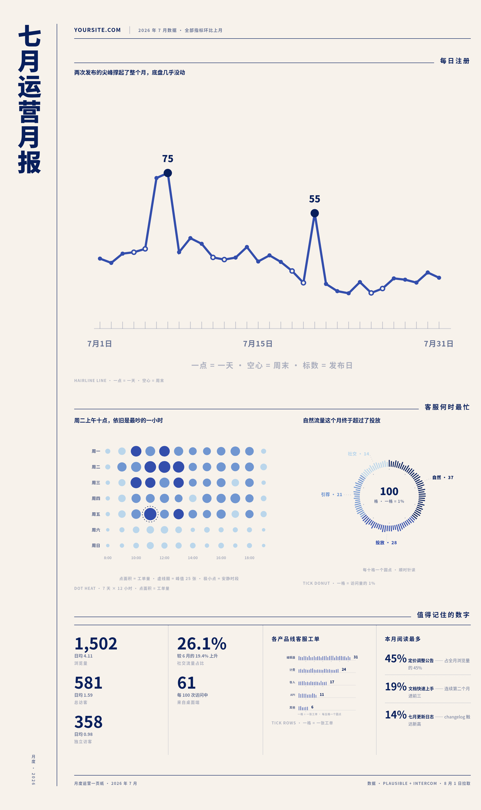
按日折线、底部大数和榜单。
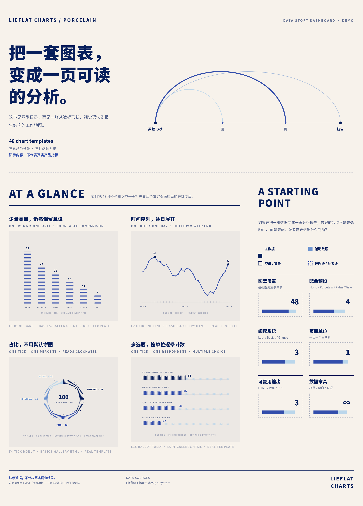
多模块一屏总览，右栏配 KPI。
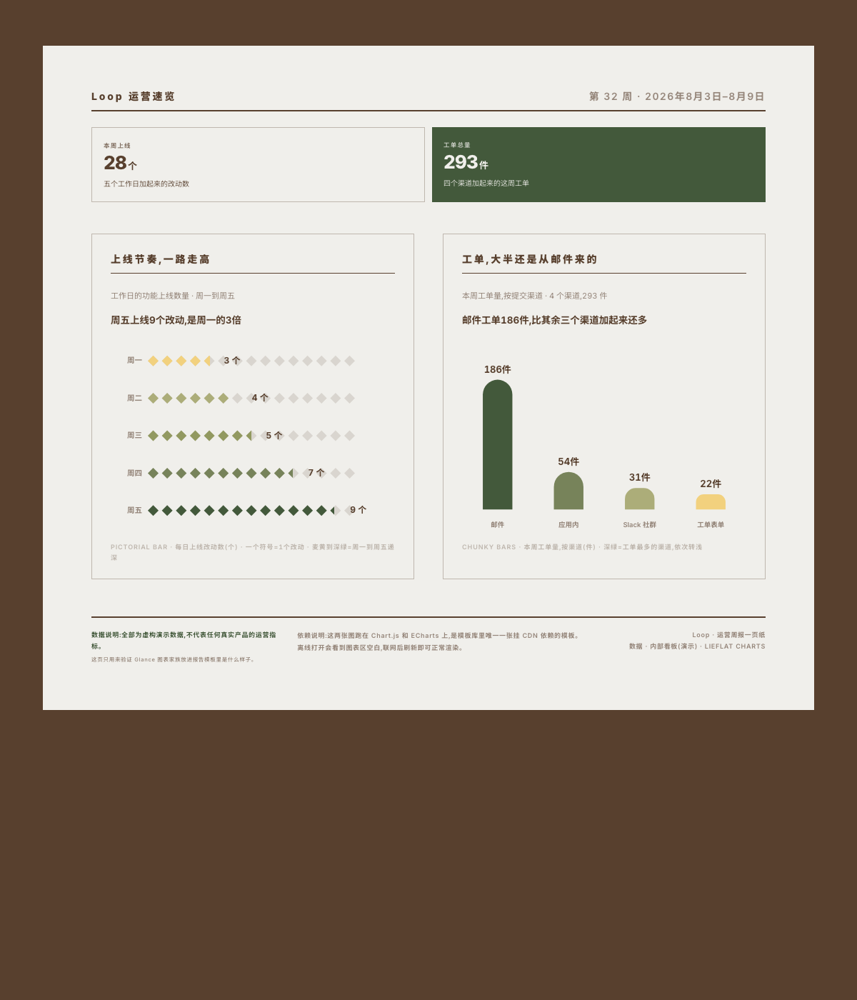
区间、排序和指标在一屏内快速扫读。
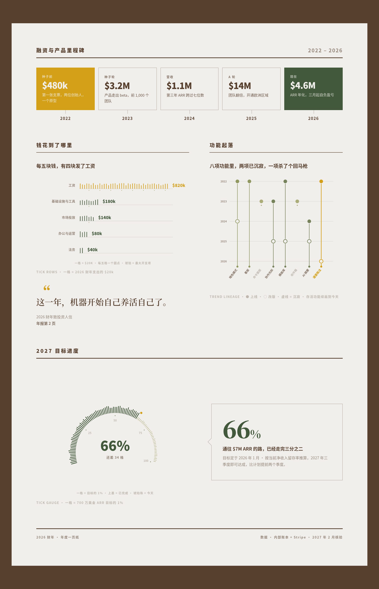
里程碑、趋势谱系和年度大数。
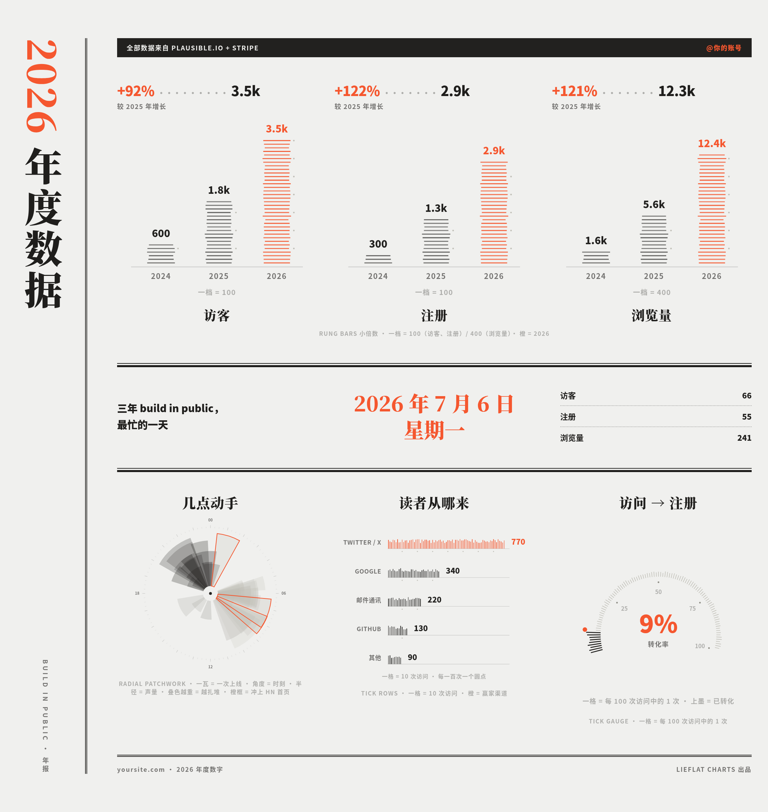
书脊大标题、同构小图和时刻分布。
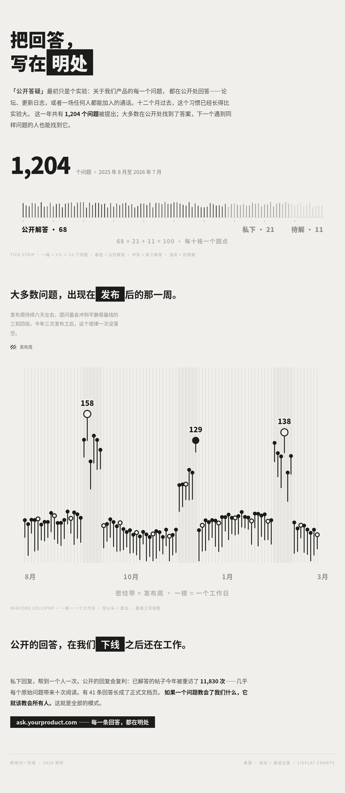
窄栏主线叙事，关键词用反色高亮。
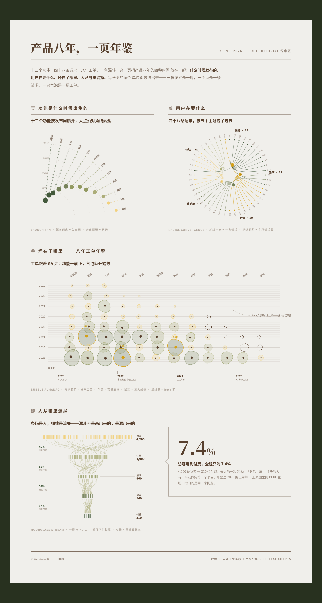
长周期、多维度、复杂证据的整页复盘。
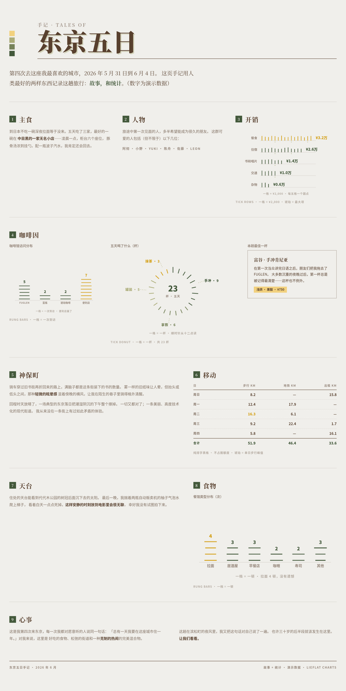
故事段落、小图和行程表交替向下。